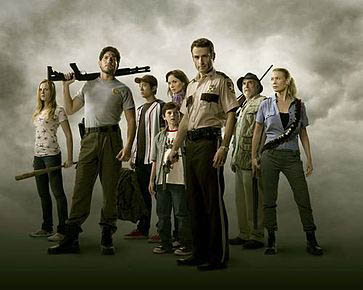
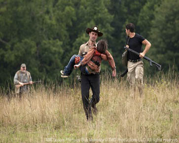
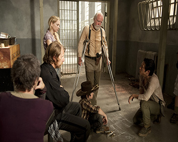
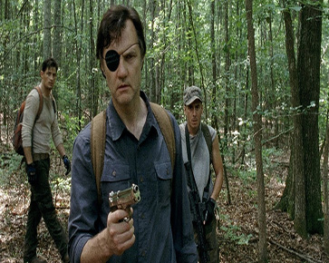

Based on the comic book series written by Robert Kirkman, this gritty drama portrays life in the weeks and months following a zombie apocalypse. Led by police officer Rick Grimes, his family and a group of other survivors find themselves constantly on the move in search of a safe and secure home. But the pressure each day to stay alive sends many in the group to the deepest depths of human cruelty, and Rick discovers that the overwhelming fear of the survivors can be more deadly than the zombies walking among them.

The first season of The Walking Dead, an American post-apocalyptic horror television series on AMC, premiered on October 31, 2010, and concluded on December 5, 2010, consisting of 6 episodes.

The second season of The Walking Dead, an American post-apocalyptic horror television series on AMC, premiered on October 16, 2011, and concluded on March 18, 2012, consisting of 13 episodes.

The third season of The Walking Dead, an American post-apocalyptic horror television series on AMC, premiered on October 14, 2012, and concluded on March 31, 2013, consisting of 16 episodes.

The fourth season of The Walking Dead, an American post-apocalyptic horror television series on AMC, premiered on October 13, 2013, and concluded on March 30, 2014, consisting of 16 episodes.